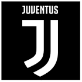

|  | Juventus |
| Ethnic | Italian |
| Job | Italian Football Club |
| Desc | Juventus Football Club, colloquially known as Juve, is an Italian professional association football club based in Turin, Piedmont |
Affiliation
| Location | City of Turin |
2009 07 04 Retrieve
[Juventus Wish Legendary Giampiero Boniperti Happy Birthday] Saturday 4th July is the 81st birthday of Giampiero Boniperti. The honorary president dedicated his life to Juventus, having won 14 scudetti, five of which as a player and nine as a director apart from a number of international triumphs represented by 10 trophies. As a player, Boniperti was simply the best Italian player to emerge from the second world war. On the eve of this new stage in his life, all at Juventus wish Giampiero Boniperti all the best on his birthday
2012 01 17 Retrieve
[Juventus have dismissed reports suggesting Arturo Vidal could have been involved in a match-fixing scheme with Cesena’s Guillermo Rodriguez earlier this season] The recent circulation of footage concerning the penalty struck and scored by Arturo Vidal in the Juventus v Cesena encounter, which according to some reveals a gesture of agreement between the Cesena player tasked with stopping the penalty and the Bianconeri midfielder, constitutes a clumsy and underhanded attempt at defamation.
Juventus Football Club will act accordingly in order to protect the image of both the club and Arturo Vidal.
2015 10 10 Retrieve
[Bianconeri later stated Alvaro Morata’s progress will be monitored over the coming days] Alvaro Morata has today returned from international duty and the Juventus medical staff has confirmed the diagnosis of their Spanish counterparts: a bruised right leg with no evidence of fractures. The striker’s condition will continue to be monitored over the coming days in order to assess the best course of action for his return to training.
2016 08 09 Retrieve
[Manchester United have confirmed the signing of Paul Pogba for a world record fee of €110m (£93.2m) from Juventus] Manchester United is delighted to announce that Paul Pogba has completed his transfer from Italian club Juventus. Paul joins on a five-year contract, with the option to extend for a further year
2017 01 16 Retrieve
[Juventus explain the design as referring] the famous phrase of [former owner] Gianni Agnelli: ‘I get excited every time I see in the newspapers a word that starts with J’.
2017 01 20 Retrieve
[Juventus fan Kevin Prota tattoos club logo on his back] For me Juventus is a passion, a feeling. One day I found myself thinking how I could make the bond even stronger, and I said to myself: ‘Why not get a tattoo of the logo?’. And in the end I did it! I have not thought much about other people’s thoughts, the body is mine - I think I am allowed to tattoo something that belongs to me.
I found out by chance. I received a message from a friend in a Whatsapp group saying to me, ‘Kevin, look, Juventus have a new logo!’. At first I did not want to believe it, I thought it was one of those pissed on the internet. [On Tuesday] morning, when I opened the app that I use to keep me updated on the team’s news, however, I realised that they really had changed the logo. After a moment of disbelief I was able to laugh, so what’s done is done. Also, my right shoulder is still free, so there is still room for the new emblem. I honestly prefer the old, but I’ll have no choice but to get used to it
Andrea, next time maybe do an interview before [the announcement], give me a call, write me a letter or send a fax so I might wait a moment and not be behind the times
2017 01 26 Retrieve
[Juventus have released a touching tribute to the club’s departing full-back Patrice Evra following the Frenchman’s transfer to Marseille] Juventus Football Club can today confirm the departure of Patrice Evra, the French full-back joining Olympique Marseille after two-and-a-half years of magnificent service in Turin.
Evra arrived at Juventus in the summer of 2014 with the strongest of title-winning track records from his previous eight and a half seasons at Manchester United and he leaves Turin with an even more impressive CV, having played his part in two Scudetto triumphs, two Coppa Italia crowns and last year’s Italian Super Cup victory.
Signed for his big-match experience, the 35-year-old has been an ever-present in the Bianconeri’s Champions League line-ups over the last two and a half years, making 22 appearances for Juve in Europe’s premier club competition and playing the entirety of his side’s breath-taking run in the 2014/15 knockout stages, except for injury time in the final against Barcelona
It was not merely on the pitch that Evra made his mark for the Bianconeri, but undoubtedly in the dressing room too, his bubbly, larger than life personality rubbing off positively on his peers, whilst he also showed genuine leadership qualities and a more serious side when the time was right. With Uncle Pat around, as he is affectionately known, there’s been no lack of light-hearted humour, his jokes and authentic imitations of team-mates in the JChallenge bringing smiles to the faces of supporters and everyone associated with the club. Evra would be the first to admit, however, that comedy should never come at the cost of victory. Indeed, our number 33 departs Juventus with his status as natural-born winner even further enhanced. Merci, Patrice
2017 01 30 Retrieve
[Juventus have completed a €10 million deal to sign Riccardo Orsolini from Ascoli] With strong technique, physicality, positional sense and dribbling ability all in his locker, the left-footed winger Orsolini has emerged as one of the revelations of this Serie B season. Born in Rotella, a village within the province of Ascoli Piceno, the 19-year-old has risen through Ascoli’s youth ranks to become an ever-present in the first team so far in 2016/17. Orsolini exploded onto the scene last season with Ascoli’s Primavera, netting 17 times in 21 league appearances, as well as bagging a further three in the Viareggio Cup and two in the Coppa Italia. Such form saw him instantly promoted to the first team for the second half of the 2015/16 campaign and he has taken his game to another level still this term scoring four goals and providing four assists from his wide forward position.
2018 06 07 Retrieve
[Juventus have confirmed the permanent signing of Douglas Costa, who will join the Turin club from Bayern Munich for a fee of €40 million] Juventus have exercised the option right for the permanent purchase of the player Douglas Costa from Bayern Munchen for a fee of €40m to be paid in two financial years. The consideration may increase €1m upon the fulfilment of certain conditions over the course of the duration of his contract.
- 2018 07 06
- Paris Saint-Germain have completed the signing of Gianluigi Buffon
2018 07 08 Retrieve
[Juve were compelled to publish a statement after their stock price rocketed amid news of Christiano Ronaldo’s potential arrival] After the request from CONSOB related to the news published recently on media outlets, Juventus Football Club S.p.A is keen to remind that during the transfer season the club is evaluating several opportunities and will publish adequate information as prescribed by the law.
- 2018 07 10
- Juventus president Andrea Agnelli is flying to Greece on Tuesday to meet Cristiano Ronaldo and wrap up the €100 million signing of the forward from Real Madrid
2018 07 12 Retrieve
[A statement from the Unione Sindicale di Base. Juve, Fiat Chrysler Automobiles [FCA] and CNH Industrial [CNHI] are all owned by the holding company Exor, which is controlled by the Agnelli family, and workers have expressed their disgust at the transfer] It is unacceptable that while FCA and CNHI workers continue to make huge economic sacrifices, the company then spends hundreds of millions of euros on the purchase of a player.
- 2018 07 29
- Massimiliano Allegri has confirmed that Andrea Favilli will be sent out on loan to Genoa this season
2018 08 02 Retrieve
[AC Milan have confirmed the signings of Juventus pair Gonzalo Higuain and Mattia Caldara as they bid farewell to Bianconeri-bound defender Leonardo Bonucci] Juventus Football Club announces the return of Leonardo Bonucci after the defender completed his move from AC Milan. After spending seven wonderful years in black and white, Leonardo Bonucci has returned to the club following a season at AC Milan. Bonucci began his Bianconeri career in 2010, emerging as one of the most promising young defenders in Italy, and he would go on to establish himself as one of the very best in the world in his role. Now, both Juventus and Bonucci are ready to start winning things again together. Welcome home, Leo!
2018 08 17 Retrieve
[Claudio Marchisio has left Serie A champions Juventus after his contract was terminated by mutual consent] Today marks the end of Claudio Marchisio’s Juventus career following the agreed termination of his contract. With every battle competed, every ripple of the net and every trophy raised, his childhood dreams kept coming true. In truth, we all lived our dreams side by side with Claudio. Watching him grow and become, year after year, a man, husband and father filled all of us Bianconeri with a unique sense of gratification. Having had the opportunity to accompany him on this path, to discover a homegrown champion, day by day, was quite simply a privilege and an honour. And it will be a pleasure to keep following him, with whichever shirt he will wear in the future. For the black and white stripes, as we know, will always form an indelible part of him and his story. Thanks for everything, Claudio! We wish you the very best.
2018 10 05 Retrieve
[Juventus back Cristiano Ronaldo after rape allegations] Cristiano Ronaldo has shown in recent months his great professionalism and dedication, which is appreciated by everyone at Juventus. The events allegedly dating back to almost 10 years ago do not change this opinion, which is shared by anyone who has come into contact with this great champion.
2018 10 21 Retrieve
[Juventus have confirmed that Emre Can will undergo tests] Emre Can will undergo clinical tests and investigations for a thyroid nodule that could also require surgical treatment
- 2018 12 15
- Cristiano Ronaldo netted Juventus’ 5000th all-time Serie A goal by scoring a penalty against Torino on Saturday
2018 12 21 Retrieve
[Juventus have announced they have extended their partnership with Adidas until 2027] Juventus Football Club S.p.A. and adidas… have modified the official partner agreement and extended the term of the agreement until 30 June 2027. The new agreement will relate to the period starting with season 2019/2020 and cover in total eight football seasons until 2026/2027. During this period adidas will be the technical partner of all Juventus teams for a minimum fixed consideration of €408 million. The consideration does not include additional royalty payments upon exceeding a threshold of sales and sports performance bonuses.
With respect to the excellent performance of the commercial partnership and to the increased visibility of the Juventus brand in 2018, adidas recognized an additional bonus of €15 million for 2018, which will be paid prior to 31 December 2018. The other terms and conditions of the existing contract remain unchanged until the start of the new agreement in season 2019/2020
2019 01 24 Retrieve
[Striker Gonzalo Higuain says he can’t wait to get started as he joins Chelsea on loan from Juventus] The agreement also grants to Chelsea the options to extend the duration of the loan until 30 June 2020, for a consideration of 18 million euros [£15.7million] to be paid in 2019-20 financial year, or to acquire the registration rights of the player on a permanent basis for 36 million euros [£31.3million] to be paid in two financial years
2019 02 27 Retrieve
[Juventus had been left sweating on the fitness of star man Cristiano Ronaldo] Both Douglas Costa and Cristiano Ronaldo trained separately from the group. For CR7, check-ups have been scheduled for today and tomorrow following a knock to his left ankle during the game against Bologna.
2019 03 26 Retrieve
[Cristiano Ronaldo has undergone tests in Portugal after suffering an injury in Monday’s Euro 2020 qualifier against Serbia] After being forced to go out at the 30th minute of the first half of the match between Portugal and Serbia, valid for the Euro 2020 qualifications, Cristiano Ronaldo was subjected in Portugal to investigations that showed an apparent minor injury to the right thigh flexors. His conditions will be monitored and will be subjected to new investigations to define the resumption of competitive activity
- 2019 04 20
- Juventus confirmed their domestic supremacy in Italy by sealing a record eighth consecutive Scudetto win after Saturday’s 2-1 victory over Fiorentina
2019 05 14 Retrieve
[Controversial new Juventus 2019-20 kit] The 2019/20 home jersey represents a choice, a promise, a call to action. The new jersey is distinguished by an all-new half-and-half striped design, enhanced by a contrast pink detail on the front, nodding to the first colour the club ever played in. The daring new design evokes the past, whilst igniting the future of the club through the evolution of the iconic black and white stripes. The new jersey will continue to have the iconic black and white colours, but in the shape of the new half-and-half stripes, along with an unexpected flash of pink that sits at the heart of the design and honours the first colour the club ever played in
2019 05 17 Retrieve
[Juventus have announced that head coach Massimiliano Allegri will leave the club at the end of the 2018-19 season] Massimiliano Allegri will not sit on the Juventus bench in the 2019-2020 season. The coach and the president, Andrea Agnelli, will meet the media together at a press conference, which will be held tomorrow, Saturday 18 May, at 2pm (CET) in the conference hall of the Allianz Stadium
- 2019 05 18
- Juventus striker Cristiano Ronaldo has been awarded the Serie A Player of the Season award
- 2019 05 24
- Chelsea will not stand in manager Maurizio Sarri’s way if he looks to leave the club this summer, though they will inform Juventus they will require a £5 million fee to release him from his contract
- 2019 05 25
- Juventus have held positive talks over renewing the contract of teenage sensation Moise Kean.
2019 05 28 Retrieve
[Juventus goalkeeper Wojciech Szczesny has undergone surgery on his right knee] Wojciech Szczesny was today operated on, by Dr. Ramon Cugat in Barcelona. He had arthroscopic surgery on his right knee. The process was perfectly successful and the player will immediately begin physiotherapy/rehabilitation treatment
2019 05 29 Retrieve
[What happened at Heysel? Juventus vs Liverpool European club ban explained. The organisation’s official observer Gunter Schneider said] Only the English fans were responsible. Of that there is no doubt.
2019 05 29b Retrieve
[What happened at Heysel? Juventus vs Liverpool European club ban explained. Eyewitness Ed Vulliamy] The signs had been there all day, as the British fans got drunk and rowdy on their way to the ground. In fact, they had been there for years: Britain was on patriotic turbo-charge after the election of Margaret Thatcher and war in the Falklands, and no one expressed the mood with greater articulacy than ‘our boys’ supporting football teams in Europe. There had already been serious trouble with Spurs and Manchester United; now it was Liverpool’s turn
- 2019 05 31
- Maurizio Sarri has reached an agreement with Juventus to become the Serie A champions’s next head coach
- 2019 06 05
- Juventus consider Mario Mandzukic sale as Maurizio Sarri again turns to Gonzalo Higuain.
- 2019 06 05b
- Juventus have completed the €15 million (£13m/$17m) signing of Sassuolo defender Merih Demiral.
- 2019 06 06
- Manchester City are in talks with Juventus over a €50 million move for Joao Cancelo.
- 2019 06 08 Retrieve
- Daniele Rugani is close to signing a contract extension with Juventus that will see the 24-year-old remain in Turin until 2024. The central defender is thought to be excited at the prospect of restarting his relationship with Maurizio Sarri, having worked with the coach at Empoli.
- 2019 06 11
- Juventus will allow Cristian Romero to spend the 2019-20 campaign on loan at Genoa despite investing €30 million in securing his services
- 2019 06 12
- Inter Milan are hoping to offload Mauro Icardi in the summer and are exploring the possibility of a swap deal with Juventus involving forward Paulo Dybala.
- 2019 06 14
- Rodrigo Bentancur has signed a new contract to keep him at Juventus until 2024
- 2019 06 14b
- Paris Saint-Germain contract rebel Adrien Rabiot has admitted to having held talks with Juventus.
2019 06 16 Retrieve
[Maurizio Sarri has been confirmed as the new manager of Juventus after leaving Chelsea and putting pen-to-paper on a three year deal with the Italian champions] The two clubs have reached an agreement for the early termination of Sarri’s contract with Chelsea FC which had two years left to run and is ending at his request
- 2019 06 17
- Manchester City and Juventus are close to reaching a deal for right-back Joao Cancelo.
- 2019 06 18
- Juventus are stepping up their efforts to sign Paul Pogba but accept that they will face stiff competition from Real Madrid for the Manchester United midfielder. According to sources close to the Serie A champions, the club’s sporting director Fabio Paratici met with United officials to discuss a potential deal for the France World Cup winner while he was in the UK finalising a move for Maurizio Sarri.
- 2019 06 20
- Bologna have exercised their option to permanently sign Juventus attacker Riccardo Orsolini in a €15 million deal
- 2019 06 20b
- Juventus are confident of securing a deal to sign Paris Saint-Germain midfielder Adrien Rabiot.
- 2019 06 22
- Juventus are increasingly confident that they can win the race to sign Matthijs de Ligt and are preparing to bid around €70 million to land the Ajax star
- 2019 06 22b
- Maurizio Sarri has taken the reins at Juventus and made a meeting with Cristiano Ronaldo one of his first points of business. The former Napoli and Chelsea boss is back in Serie A after a season-long spell in the Premier League at Stamford Bridge and he has inherited a star-studded squad in Turin from Massimiliano Allegri.
- 2019 06 22b
- Rodrigo Bentancur has signed a new contract with Juventus that ties him to the Serie A champions until 2024
- 2019 06 25
- Gonzalo Higuain is a favoured option of new Juventus boss Maurizio Sarri, but the Bianconeri are still eager to move him out of the club this summer
- 2019 06 26
- Juventus legend Gianluigi Buffon is set to make a sensational return to the club after announcing his Paris Saint-Germain departure
- 2019 06 26b
- Juventus are in contact with Juan Cuadrado regarding a contract extension which would see him remain at the club until 2021
- 2019 06 26c
- Juventus are closing on a €70 million transfer for Ajax captain Matthijs De Ligt, with a deal possible in the coming hours
- 2019 06 28
- Juventus have reached an agreement with French midfielder Adrien Rabiot on a multi-year contract. Available on free transfer after refusing to sign a new deal with Paris Saint-Germain.
- 2019 06 29
- Paris Saint-Germain have made contact with the representatives of Juventus defender Leonardo Bonucci as they face up to the likelihood of missing out on Matthijs de Ligt.
- 2019 06 30
- Paris Saint-Germain midfielder Adrien Rabiot is to undergo a medical with Juventus on Monday ahead of signing a five-year deal with the Turin club
- 2019 06 30b
- The brother of Juventus striker Gonzalo Higuain, Nicola Higuain, has said the Argentinian frontman will remain with the Turin club for the 2019-20 season
- 2019 06 30
- Luca Pellegrini is on the cusp of completing a move to Juventus after arriving at the club’s health centre for a medical on Sunday
- 2019 07 01
- Luca Pellegrini has completed his switch from AS Roma to Serie A rivals Juventus in a deal that sends Leonardo Spinazzola the opposite direction
2019 07 01b Retrieve
[Chelsea have confirmed Gonzalo Higuain has left the club, with the Europa League winners opting not to extend his loan from Juventus or pursue a permanent deal] Gonzalo Higuain joined Chelsea on loan from Juventus in January. He was reunited with Maurizio Sarri after their successful time together at Napoli. Higuain made his Blues bow in an FA Cup win over Sheffield Wednesday, and opened his account with two superbly-taken goals the following weekend against struggling Huddersfield. He netted three more times before the expiry of his loan, all sharp finishes that highlighted his natural ability in front of goal. Fulham, Burnley and Watford were his victims, and he more than played his part in our eventual third-placed Premier League finish. With Olivier Giroud leading the line in the Europa League, Higuain’s involvement was largely limited to domestic competitions, but he leaves having added another winners’ medal to his extensive collection after victory in Baku
- 2019 07 01c
- Juventus have completed the signing of Adrien Rabiot, the Serie A side have announced
- 2019 07 02
- Adrien Rabiot wants to make history by emulating Zidane, Trezeguet & Platini at Juventus after joining the Serie A champions on a free transfer
- 2019 07 03
- Juventus have communicated to striker Gonzalo Higuain that he is no longer required and can leave the club this summer. The Argentina international has returned to Turin this summer after Chelsea decided against either extending Higuain’s loan deal or signing him on a permanent basis
- 2019 07 04
- Gianluigi Buffon has arrived at Juventus’s medical facility ahead of his stunning return to the Serie A champions
- 2019 07 04b
- Gianluigi Buffon’s agent Silvano Martina say his client turned down offers from the Premier League in order to make an emotional return to Juventus.
- 2019 07 04c
- Gianluigi Buffon is a Juventus player once more, with the legendary goalkeeper having completed a return to Turin on a one-year contract
2019 07 08 Retrieve
[Matthijs de Ligt’s agent, Mino Raiola, confirmed on Sunday that a deal has been made with Juventus] Agreements have been made with Matthijs and it is up to Ajax how they deal with this
- 2019 07 08
- Genoa defender Cristian Romero is set to undergo a medical with Juventus on Tuesday ahead of a move to the Serie A champions
2019 07 12 Retrieve
[Juventus sign €26m defender Cristian Romero from Genoa] Juventus announces that the agreement with Genoa for the definitive acquisition of the registration rights of the player Cristian Romero has been finalised for a consideration of €26m payable in three financial years. Juventus and the player have signed a five-year contract of employment until June 30, 2024. At the same time, Juventus has reached an agreement with Genoa for the free loan until June 30, 2020 of the